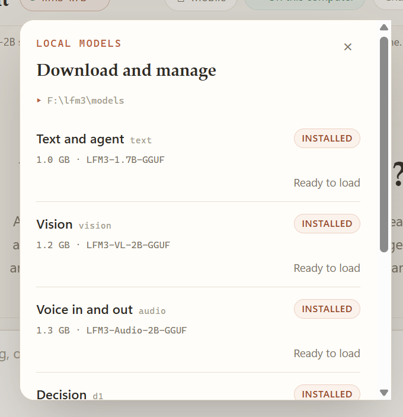

Using the app
Models
Four small models, each with one job. They are never downloaded in the background, never fetched from a URL you did not approve, and never leave your machine.
Four small models share the work, each with one job. They are never downloaded in the background, never fetched from a URL you did not approve, and never leave your machine.
The four roles#
| Role | Model | Job | Context | Port |
|---|---|---|---|---|
| Act | LFM3-1.7B | Planning, bounded acting, and short synthesis | 32,000 tokens | 8080 |
| Look | LFM3-VL-2B | Bounded visual observation of one image at a time | per-image | 8081 |
| Hear and speak | LFM3-Audio-2B | Verbatim transcription; speech output through llama-tts | per-clip | 8082 |
| Decide | d1-2B | Route classification and the two decision gates | closed labels | 8083 |
Only LFM3-1.7B is agentic. The harness records each profile's measured strengths and documented weaknesses in agent::profile, and uses those limits — not a generic default — to cap turns, tool calls, replanning, and plan size.
LFM3-1.7B — the acting model#
Good at short instruction following, strict tool envelopes, concrete local edits, and using concrete failure feedback. Bad at long-horizon planning without a written plan, recalling content it has not read, self-certification, inventing figures, and recovering from repeated failures.
Those limits become harness rules: a job must write a todo list before acting, unread sources are named in the prompt, a repeated identical call is refused, and finish requires the output to exist on disk. Sampling follows the model card: temperature 0.1, top-k 50, repetition penalty 1.1.
LFM3-VL-2B — the vision model#
Observes one image at a time and reports what it sees. Because it cannot know technical facts about a file by looking, the harness supplies measured format, byte length, and pixel dimensions alongside the image. It never runs the planning loop.
LFM3-Audio-2B — hearing and speaking#
Transcribes verbatim. It is not an analyst: it does not label speakers, add timestamps, or summarise. Recordings arrive with measured container facts (duration, sample rate, channels) from the harness. The same weight, through llama-tts, renders spoken replies.
d1-2B — the decision model#
Answers over a closed label set: a task shape for routing, and aligned/uncertain/contradicts or sufficient/insufficient/off-topic for the gates. Its confidence must clear a harness-owned floor or the deterministic keyword route wins. It is not agentic and cannot call tools.
The catalog#


- Models folderWhere verified weights live. Override it with LFM3_MODELS_DIR; the app scans it on every launch.
- One row per roleText and agent, Vision, Voice in and out, and Decision. No role downloads to fill another's gap.
- InstalledThe pinned file is on disk. Name, byte length, and SHA-256 all matched before it counted.
- Ready to loadVerified but not resident. Chat and jobs hot-swap it when idle, or use Load now.
- Decision roleThe classifier behind routing and both gates. Without it the app falls back to keyword routing.
The Models menu lists all four roles with their files, size, repository, and license. Every file is pinned by name, byte length, and SHA-256; the harness verifies all three before using a file.
| Role | Files | Download |
|---|---|---|
| Text and agent | LFM3-1.7B-Q4_K_M.gguf | 1.10 GB |
| Vision | LFM3-VL-2B-QAD-Q4_0.gguf + mmproj-LFM3-VL-2B-Q8_0.gguf | 1.25 GB |
| Voice in and out | LFM3-Audio-2B-Q4_K_M.gguf + mmproj-LFM3-Audio-2B-Q8_0.gguf | 1.40 GB |
| Decision | d1-2B-Q4_K_M.gguf | 1.10 GB |
All four roles total roughly 4.9 GB on disk. The repositories are the pinned LiquidAI/LFM3-1.7B-GGUF, LiquidAI/LFM3-VL-2B-GGUF, LiquidAI/LFM3-Audio-2B-GGUF, and LiquidAI/d1-2B-GGUF; each file is fetched over HTTPS from huggingface.co.
Role states#
Each row reports one of three states:
| State | Meaning | What you can do |
|---|---|---|
| Loaded | A local server holds the model | Use it now |
| Installed | The pinned weights are on disk | Load it, or let chat and jobs hot-swap it when idle |
| Missing | No verified weights found | Download it, or copy GGUF files in and reload |
Download flow#
A download starts only when you click Download on a row. Then:
- The harness streams the file to a
.partfile with live progress and a Cancel control. - It verifies the published byte length and SHA-256.
- Only a verified file is moved into the models folder. A failed check leaves the
.partfile discarded. - On completion, a role is hot-swapped into chat and jobs if they are idle. Otherwise the menu offers Load now.
One role downloads at a time. Starting a second download while one is active is refused rather than queued, so the progress and cancel state always refer to exactly one file.
Manual is a first-class path
If you already have the GGUFs — from a mirror, a shared drive, or an air-gapped machine — copy them into the models folder and choose Reload installed models. The app verifies what it finds and reports the same Loaded/Installed/Missing states.
Where weights live#
| Platform | Models folder |
|---|---|
| Windows | %LOCALAPPDATA%\LFM3Harness\models |
| Linux desktop | $XDG_DATA_HOME/LFM3Harness/models or ~/.local/share/LFM3Harness/models |
| Linux CLI | models/ beside run.sh |
The desktop app creates one subfolder per upstream repository and scans the folder on launch. Override the location with LFM3_MODELS_DIR, which every package honours. The path is shown at the top of the Models menu so you never have to guess.
Missing roles degrade, they do not break#
| Missing role | Effect |
|---|---|
| Text | Chat and jobs cannot run. Nothing else can substitute. |
| Decision | Routing falls back to the calibrated keyword route; the write and evidence gates stay silent. Approval behaviour is unchanged. |
| Vision | look is not offered; image attachments cannot be inspected. |
| Audio | The microphone path, transcribe, and local speech output report the role as unavailable. On Windows, speech output can fall back to the offline system voice labelled system-sapi. |
Nothing is downloaded to fill a gap. A missing role is reported, not repaired.
Performance and hardware#
The bundled runtime is CPU-only and starts servers with -ngl 0. No GPU backend ships in any installer; the 594 MB CUDA backend is excluded deliberately, so no NVIDIA code is redistributed.
- Text inference is the practical bottleneck. A measured
desk_taskacceptance run completed in 5.99 s wall time including model startup, with a 1,603,924 KB (about 1.53 GiB) peakllama-servermemory on the release machine. - Running all four roles at once costs memory, not correctness. 8 GB is a workable minimum for chat alone; more headroom makes vision, voice, and routing comfortable alongside it.
- Expect CPU inference to be slower than a GPU build. The project publishes measured numbers rather than speed claims; the multi-model benchmark records them with caveats.
Endpoints and external servers#
Each role has a loopback default: http://127.0.0.1:8080/v1 for text, :8081 for vision, :8082 for audio, and :8083 for d1. You can point a role at another endpoint with LFM3_TEXT_URL, LFM3_VISION_URL, LFM3_AUDIO_URL, or LFM3_D1_URL, and rename the served identity with the matching *_MODEL variable.
--external (LFM3_REUSE_EXTERNAL_SERVERS) tells the CLI to reuse an already-running loopback server instead of owning one. Under LFM3_PROFILE=packaged, the engine refuses to start with a non-loopback endpoint or with the download flag on. See Configuration.
Removing a model#
Delete its folder inside the models folder, then choose Reload installed models. Nothing else references the weights: chat history lives in chat.db, verified evidence lives in the run journal, and neither embeds model bytes.
Do not edit a verified file
The SHA-256 is the identity of the file. Replacing a .part file, truncating a download, or swapping in a different quantization makes the role fail verification. Download again, or supply a build that matches the pinned digest.
Licensing#
The weights are not shipped and not sublicensed by this project. Each model keeps the terms on its own Liquid AI model card, shown in the app as LFM Open License (see the model card). Downloading does not relicense them.
The application source is MIT. The bundled llama.cpp runtime is MIT, its OpenMP dependency is Apache-2.0 with LLVM Exceptions, and the Windows Visual C++ DLLs are Microsoft redistributables. The full matrix is in Privacy, security, and licensing.